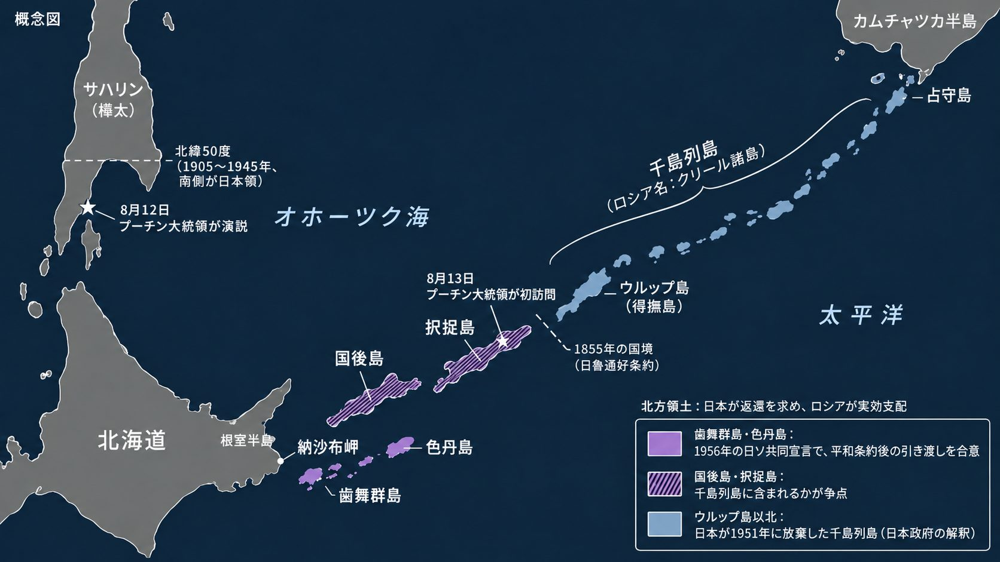
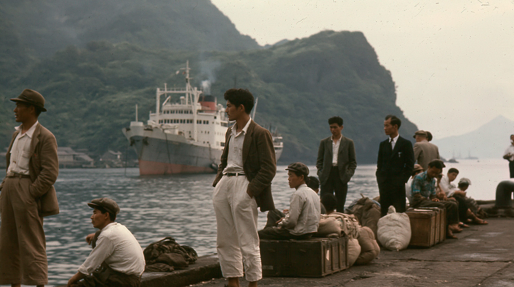
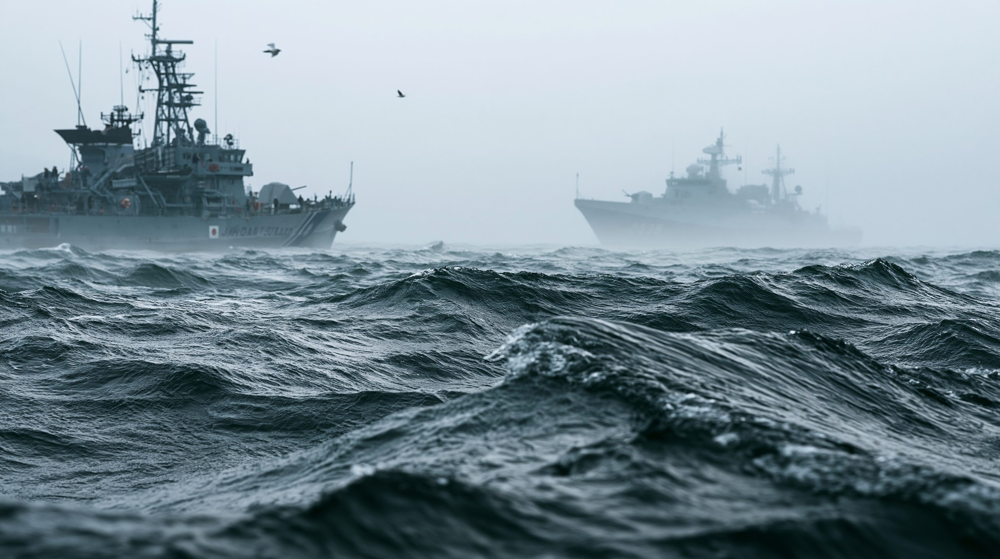

01論点 — 帰属を明確に定めた文書はあるのか
北方領土とは、択捉島（えとろふとう）・国後島（くなしりとう）・色丹島（しこたんとう）・歯舞群島（はぼまいぐんとう）の四島を指す日本側の呼び方で、ロシアは「南クリール諸島」と呼ぶ。四島は1945年8月から9月にかけてソ連軍が占領して以来、ロシアが実効支配している。日本とロシアの間には、第2次世界大戦を正式に終わらせる平和条約が、いまも結ばれていない。

2026年8月13日、プーチン大統領が択捉島を初めて訪れた。ロシアの大統領による四島の訪問は、2010年のメドベージェフ氏による国後島以来となる。日本は外相が駐日ロシア大使を呼んで抗議し、ロシア外務省は日本の抗議を「断じて容認できない」と退けた。
双方とも「歴史的にも国際法上も自国の領土だ」と主張している。この記事は、どちらかの主張を採るのではなく、条約・宣言・各国政府の公文書が何を定め、何を定めていないかを論点ごとに確認する。国際司法裁判所のような、拘束力のある判断は出ていない。
条約と公文書は、北方領土を日本とロシアのどちらの領土と定めているのか。決着していない部分は、どこにあるのか。
02タイムライン — 1855年から2026年まで、文書で見る経緯
四島の帰属をめぐる文書は、19世紀の国境条約、第2次世界大戦中の連合国の合意、戦後の平和条約と二国間の宣言に分かれる。文書ごとに、何が書かれたかを順に見る。
1855年の日魯通好条約で、日本とロシアの国境は択捉島と得撫島（うるっぷとう）の間に定められ、択捉島以南が日本領、得撫島以北がロシア領となった。1875年の樺太千島交換条約では、日本が樺太に対する権利をロシアに譲り、代わりにロシアから得撫島以北の千島18島を譲り受けた。四島は、どちらの条約でも日本側に属している。
1941年4月、日本とソ連は互いの領土の保全を尊重する日ソ中立条約を結んだ。1943年11月のカイロ宣言は、連合国は領土の拡大を望まないとし、日本が暴力と貪欲によって奪い取った地域から、日本を退去させると定めた。ソ連は1945年4月に中立条約の不延長を通告したが、条約は1946年4月まで有効だった。
2月、アメリカ・イギリス・ソ連の首脳が、ソ連の対日参戦と引き換えに「千島列島はソ連に引き渡される」とヤルタ協定で合意した。千島列島の範囲は定義されておらず、日本は当事国ではない。7月26日のポツダム宣言は、日本の主権を本州・北海道・九州・四国と、連合国が決定する諸小島に限ると定めた。ソ連は8月8日に、この宣言に加わった。
ソ連は8月9日に、中立条約の有効期間中に対日参戦した。日本は8月14日にポツダム宣言の受諾を通告し、降伏文書への署名は9月2日に行われた。ソ連軍は8月28日から9月5日にかけて、択捉島、国後島、色丹島、歯舞群島を占領した。終戦時に四島に住んでいた約1万7,000人の日本人のうち、約半数は占領後に自ら島を脱出し、残る島民は1947〜1948年に強制退去させられ、サハリンでの抑留を経て函館に送還された。
第2条(c)で、日本は「千島列島」と南樺太に対する権利を放棄した。放棄後の帰属先は書かれておらず、ソ連は調印しなかった。10月19日、外務省の西村熊雄条約局長は国会で、条約の千島列島は「北千島と南千島の両者を含む」と答弁した。ただし同じ答弁で、北千島と南千島は歴史的な事情が全く異なると述べ、歯舞群島と色丹島は千島に含まれないとアメリカ国務省が明言したとも述べている。
日本政府は2月、国後島と択捉島は放棄した千島列島に含まれないという見解に改めた。8月19日、ロンドンでダレス国務長官は重光葵外相に、ソ連が千島列島をすべて領有するなら、アメリカは沖縄にとどまり続けることになりかねないと述べた。24日の重光外相との会談で、ダレス国務長官は、国後島と択捉島が千島列島に含まれないと主張するのは難しいと述べ、含まれないとみなせる根拠があるかの調査を国務省に求めた。9月7日、アメリカは日本に覚書を渡し、歴史的事実を調べたうえで、択捉島と国後島は常に日本本土の一部だったと結論したと明記した。
第9項で、ソ連は平和条約の締結後に歯舞群島と色丹島を日本に引き渡すことに同意した。この宣言で日本とソ連の戦争状態は終わり、国交が回復した。ただし、引き渡しが約束されたのは歯舞群島と色丹島だけで、国後島と択捉島の帰属は決まらなかった。二島の引き渡しには平和条約の締結が条件とされたが、国後島と択捉島の扱いで日ソの主張が一致せず、条約は結ばれていない。
1991年4月、ゴルバチョフ大統領の来日時の共同声明は、四島の帰属についての双方の立場を考慮しつつ、領土画定の問題を含む平和条約の話し合いを行うとした。日本政府は、これを四島が領土問題の対象であることを初めて文書で確認したものと位置づけている。1993年10月の東京宣言で、エリツィン大統領と細川護熙首相は、四島の帰属に関する問題を、歴史的・法的事実に立脚し、法と正義の原則を基礎に解決すると確認した。2018年には、安倍首相とプーチン大統領が、1956年の共同宣言を基礎に交渉を加速させることで合意した。
2020年7月、ロシアは領土の割譲を禁じる改正憲法を発効させた。ただし、国境画定のための交渉は禁止の対象から除かれている。2022年3月21日、ロシア外務省は日本の対ロ制裁への対抗措置として、平和条約交渉の中断を発表した。ビザなし交流と共同経済活動の対話も止められた。四島への墓参は2019年を最後に行われておらず、再開の見通しは立っていない。
12日、プーチン氏はサハリン州ユジノサハリンスクで、クリール諸島（北方領土と千島列島）は国際文書でロシア領と確定していると述べ、実効支配する北方領土は「第2次世界大戦の結果による現実」だとした。日本が対ロ制裁を理由に交渉の立場を変えたとも批判した。13日に択捉島を訪れ、水産加工場、病院、学校を視察した。高市首相は「強く抗議」し、「歴史的にも国際法上も我が国固有の領土」だと述べた。14日には中国外務省が、世界反ファシズム戦争（第2次世界大戦）勝利の成果は適切に尊重、順守されるべきだとする談話を出したが、ロシア領とは明言しなかった。
8月17日、ラブロフ外相は、プーチン氏がロシア領内を訪れることへの日本の抗議は到底容認できないと述べた。そのうえで、在ロシア日本大使の武藤顕氏を外務省に呼ぶ考えを示した。9月16日には、ペスコフ大統領報道官が、日本が再開を目指すビザなしの四島墓参は、現時点では認められないと述べた。

036つの視点 — 同じ文書を、どう読むか
当事者と関係国は、同じ条約と宣言を、それぞれ違う立場から読んでいる。6つの視点を見たうえで、論点ごとに日本とロシアそれぞれの根拠と、文書が定めていないことを表で並べる。
| 論点 | 日本の主張の根拠 | ロシアの主張の根拠 | 文書が定めていないこと・争点 |
|---|---|---|---|
| 戦前の国境 （1855・1875年） | 1855年の条約で択捉島以南は日本領。1875年に日本が得たのは得撫島以北の千島18島で、四島がロシア領だったことはないとする | 戦前の国境ではなく、第2次世界大戦の結果によってロシア領になったと主張する | 戦争の結果として領土が移ることを、条約がどこまで認めているか |
| カイロ宣言・日ソ中立条約 （1943年・1941年） | カイロ宣言は、連合国の領土不拡大と、日本が暴力と貪欲によって奪い取った地域から日本を退去させることを定めた。四島はこれに当たらず、ソ連の参戦は中立条約の有効期間中だったとする | 現在のロシア政府の主張は、今回の調査では確認できていない | 四島が、日本が暴力と貪欲によって奪い取った地域に当たるかは、宣言に書かれていない |
| ヤルタ協定 （1945年2月） | 日本は当事国でない。アメリカも、首脳の共通の目的を表明したものにすぎず、主権を移す法的な効果はないとの立場（1955年の電報、1956年の覚書） | 「千島列島はソ連に引き渡される」と明記された。ロシア外務省は、戦後の連合国間の合意と国連憲章により、ロシアに帰属したと主張する | 千島列島の範囲は定義されていない |
| ポツダム宣言・降伏文書 （1945年7月・9月） | アメリカは、日本の領土の決定は後日に委ねられ、ソ連が単独で決めることはできないとした | 日本は宣言を受諾し、9月2日の降伏文書に署名した。ソ連は8月8日に宣言に加わった。日本政府もこの点は認めている | 宣言の「連合国が決定する諸小島」の範囲は、書かれていない |
| サンフランシスコ平和条約 （1951年） | 放棄した「千島列島」は得撫島以北で、四島は含まれないとする。署名していないソ連は、第25条により条約上の権利を得られない | 日本は「千島列島」を放棄した。放棄は署名国以外に対しても効力をもち、四島を千島列島から区別する線引きは、条約にもヤルタ協定にもないと主張する | 放棄後の帰属先は書かれていない。日本政府は1951年10月、条約の千島列島に国後島と択捉島を含むと国会で答弁し、1956年に見解を改めた |
| 国連憲章第107条 | 日本政府の見解は、今回の調査では確認できていない | ラブロフ外相は2019年1月、連合国が示した第2次世界大戦の結果を認める規定だと述べた | 第107条は、大戦中の敵国に対して連合国政府がとった行動を憲章が妨げないと定める。領土の帰属を直接定める文言はない |
| 歯舞群島・色丹島 | アメリカは、北海道の一部で千島ではないとした（1955年の電報） | ソ連は1956年の共同宣言で、歯舞群島と色丹島を平和条約の締結後に引き渡すことに同意した。1960年には、日本からの外国軍隊の撤退を新たな条件に加えたとされる | 引き渡しは平和条約の締結後とされ、条約は結ばれていない。ロシアは2020年に、憲法で領土の割譲を禁じた |
| 国後島・択捉島 | アメリカは1956年の覚書で、常に日本本土の一部だったと明記した。1991年の日ソ共同声明と1993年の東京宣言は、四島の帰属を話し合いの対象とすることを確認した | 1956年の宣言が扱うのは歯舞群島と色丹島のみで、国後島と択捉島は含まない。ザハロワ情報局長は、択捉島は法的にロシアの不可分の一部だと述べた | ダレス国務長官は1956年8月、国後島と択捉島が千島列島に含まれないと主張するのは難しいと述べた。国後島と択捉島が千島列島に含まれるかが分かれ目 |
日本政府、ロシア政府、アメリカ政府の公文書と、報道・研究機関の整理にもとづき、双方の根拠を並べたもの。どちらが正しいかを示す表ではなく、国際司法裁判所などの判断でもない。

04データ — 減り続ける元島民
交渉が止まっている間にも、島で生まれ育った人は減っている。元島民の人数と年齢を見る。
元島民の人数（1945年・2024年）
単位は人。元島民は終戦時の1万7,291人から、2024年12月末の4,987人へと3割以下に減った。
出典：北海道新聞（2025年2月7日）
05深掘り — 争点は国後島・択捉島に絞られ、時間は日本に不利に働く
※ ここから先は、ここまでの事実にもとづく筆者個人の見解です。
確認できたのは、国際司法裁判所などの判断がなく、法的な決着は付いていないことである。文書の裏づけの強さは、歯舞群島・色丹島と、国後島・択捉島とで異なる。